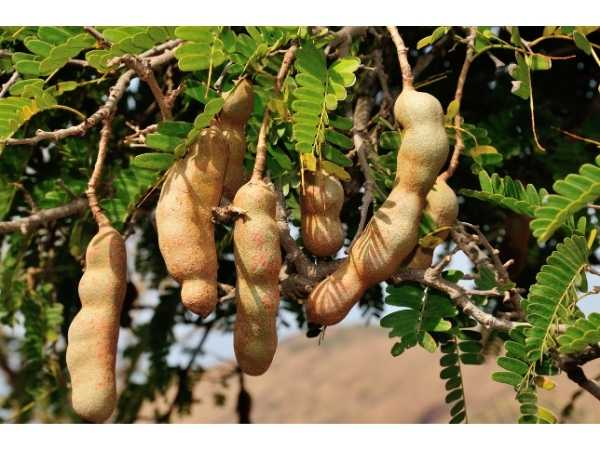

Tamarindus indica
Common Names: Sweet Tamarind, Tamarind, Imli, Indian Date
Local Name: Inippu Puli (Tamil), Meethi Imli (Hindi), Chintapandu (Telugu)
Family: Fabaceae (Caesalpinioideae)
Origin: Tropical Africa (Sudan); naturalized throughout tropical Asia
Plant Type: Perennial evergreen to semi-deciduous large tree
Variety: Sweet variety — lower tartaric acid content; sweeter pulp; PKM-1 and Urigam are popular sweet varieties
Average Lifespan: 100–200+ years
| Growth Habit | Large, slow-growing evergreen tree with dense, spreading canopy; wind-resistant |
| Plant Size | 10–25 meters tall; canopy spread 10–15 meters |
| Leaves | Pinnately compound; 10–15 pairs of leaflets; 1–2 cm each; bright green; feathery appearance; fold at night |
| Flowers | Small, pale yellow with red veins; 5 petals; borne in small racemes; fragrant |
| Flower Characteristics | Hermaphrodite; bee-pollinated; blooms in summer; attractive to bees |
| Fruit | Curved, indehiscent pod; 8–20 cm long; brittle brown shell; sticky brown pulp around seeds |
| Fruit Color | Brown shell; brown to reddish-brown pulp; sweet variety has lighter, sweeter pulp |
| Seed Characteristics | 3–12 seeds per pod; hard, brown, glossy; 1–1.5 cm; long viability |
| Root System | Deep taproot with extensive laterals; very drought-tolerant; nitrogen-fixing |
| Climate | Tropical and subtropical; tolerates hot, dry conditions; needs dry season for fruiting |
| Temperature Range | 20–40°C; frost-sensitive when young; tolerates brief cold when mature |
| Rainfall Requirement | 500–1500 mm; drought-tolerant; dry season improves fruit quality |
| Soil Type | Well-drained sandy loam to clay loam; tolerates poor, rocky, and saline soils |
| Soil pH Preference | 5.5–8.0; tolerates alkaline soils |
| Sun Requirement | Full sun (6+ hours daily) |
| Spacing | 8–12 meters between trees; large canopy needs space |
| Irrigation Method | Basin irrigation; minimal irrigation needed once established |
| Water Requirement | Very low once established; one of the most drought-tolerant fruit trees |
| Can it Grow in Pots? | Not recommended; large tree requires open ground; bonsai possible |
| Fertilizer Schedule | 2 times per year; pre-flowering and post-harvest; minimal inputs needed |
| Recommended Organic Fertilizers | FYM, vermicompost, neem cake; minimal fertilization needed for mature trees |
| Pesticide Frequency | Rarely needed; very pest-resistant |
| Recommended Organic Pesticides | Neem oil for scale insects; fruit bagging for fruit borer |
| Mulching Practice | Mulch young trees; mature trees need minimal care |
| Training System | Allow natural form; minimal training needed; stake young trees |
| Pruning Time | After harvest; remove dead and crossing branches |
| How to Prune | Light pruning to shape; remove dead wood; avoid heavy pruning |
| Common Pests | Scale insects, fruit borer, mealy bugs (occasional) |
| Common Diseases | Powdery mildew, leaf spot (occasional); generally disease-resistant |
| Disease Prevention & Remedies | Good air circulation; remove infected material; neem oil for fungal issues |
| Flowering Months | April–June (India); flowers after 6–8 years from seed |
| Fruiting Season | January–April; pods ripen in dry season |
| Days to Harvest | 7–9 months from flowering to pod maturity |
| Harvest Indicators | Shell turns brittle and brown; pod rattles when shaken; pulp separates from shell |
| Average Yield per Plant | 100–200 kg per tree (mature); very productive |
| Pollination Type | Insect-pollinated (bees); self-fertile |
| Pollination Notes | Self-fertile; bee pollination improves yield; single tree produces fruit |
| Pollination Details | Bee-pollinated; self-fertile; single tree sufficient |
| Propagation by Seeds | Seeds germinate in 1–2 weeks; soak overnight; slow to fruit (6–8 years) |
| Propagation by Cuttings | Difficult; air layering more reliable |
| Propagation by Grafting | Budding or cleft grafting on seedling rootstock; fruits in 3–4 years; preferred for sweet varieties |
| Water Usage | Very low; extremely drought-tolerant; suitable for arid and semi-arid regions |
| Soil Conservation Practices | Deep roots prevent erosion; nitrogen-fixing; improves soil fertility; excellent for agroforestry |
| Organic Practices Used | Minimal inputs; naturally robust; leaf litter improves soil |
| Companion Plants | Shade-tolerant crops under canopy; ginger, turmeric, shade vegetables |
| Biodiversity Benefits | Keystone tree; supports birds, bats, insects; nitrogen-fixing benefits soil ecosystem |
| Commercial Production Regions | India (Tamil Nadu, AP, Maharashtra), Thailand, Mexico, West Africa |
| Market Uses | Fresh fruit, culinary use, candy, beverages, health food |
| Processing Uses | Tamarind paste, concentrate, candy, sauce, beverages, Worcestershire sauce ingredient |
| Market Value (Approx.) | ₹40–100 per kg; sweet variety commands premium; grafted plants ₹200–500 |
| Symbolism | Sacred tree in Hindu tradition; associated with Shani (Saturn); planted near temples |
| Traditional Uses | Essential in South Indian, Thai, and Mexican cuisine; bark and leaves used in Ayurveda for fever and digestive health |
| Calories | 239 kcal per 100g (pulp) |
| Dietary Fiber | 5.1 g per 100g |
| Vitamin C | 3.5 mg per 100g |
| Potassium | 628 mg per 100g |
| Antioxidants | Tartaric acid, polyphenols, flavonoids; high antioxidant activity |
| Other Key Nutrients | Iron, magnesium, phosphorus, thiamine, niacin, calcium |
| Digestive Health | Natural laxative; used for constipation and digestive complaints in Ayurveda |
| Anti-inflammatory Properties | Polyphenols show anti-inflammatory and antioxidant activity |
| Heart Health | Potassium and fiber support cardiovascular health; reduces LDL cholesterol |
Disclaimer: Information provided is for educational purposes only and not a substitute for medical advice.
Add your field observations here.